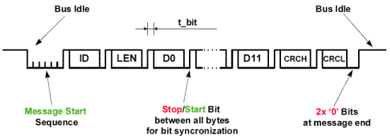
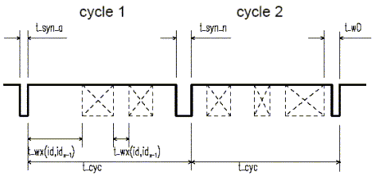
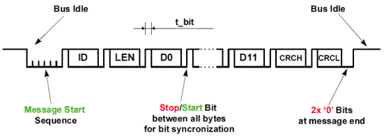
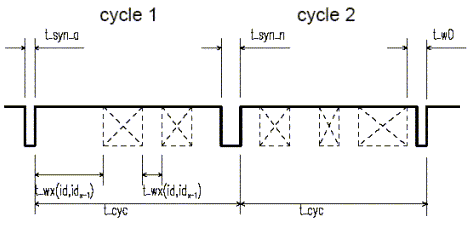

| Byteflight | |
|
|

Component
Byteflight
Byteflight communication interface
Component Level: High
Category:
CPU Internal Peripherals-Communication
The Byteflight module is specific implementation of the BMW Byteflight concept.
The device interfaces a MCU and the optical transceiver device Infineon (SPF BFT003) for
receiving and transmitting messages according to BMW Byteflight specification. The protocol is message-oriented, i.e. there are no receiver addresses.
Access to the bus is not controlled by the master but is completely time controlled by the protocol.
The protocol defines the message format as follows

The identifier (ID) byte is followed by the length (LEN) byte, which contains the number of data bytes (0-12) of the message. Following the data bytes are two CRC bytes (check sum). The priority of the ID is inversely proportional to its value. One byte of the message is embedded into a start bit "1" and stop bit "0" and is transmitted in non-return-to-zero format with MSB first. The dominant state is represented by a logical "0" and recessive state by a logical "1". Every transmitted message contains an additional message start sequence of 6 bits logic "0" followed by the start bit ("1") of the first byte.
Every node can be configured as bus master by the software. The current bus master generates periodic synchronization pulses (SYNC) in the cycle of t_cyc. In the Byteflight system only one bus master should exist. All other nodes are bus slaves and use the SYNC pulses for their internal synchronization.

There are two types of SYNC pulses, the normal SYNC pulse with duration of t_syn_n and the alarm SYNC pulse with duration of t_syn_a. The bus master and bus slaves can send and receive messages in the communication cycle, which is the time between the SYNC pulses. Order of the messages is determined by their priorities, which are given by the ID. Every ID can appear only once during a cycle. That warrants that a certain amount of high priority messages can be transferred, the bus cannot be occupied by the message with highest priority.
The protocol defines the message format as follows

The identifier (ID) byte is followed by the length (LEN) byte, which contains the number of data bytes (0-12) of the message. Following the data bytes are two CRC bytes (check sum). The priority of the ID is inversely proportional to its value. One byte of the message is embedded into a start bit "1" and stop bit "0" and is transmitted in non-return-to-zero format with MSB first. The dominant state is represented by a logical "0" and recessive state by a logical "1". Every transmitted message contains an additional message start sequence of 6 bits logic "0" followed by the start bit ("1") of the first byte.
Every node can be configured as bus master by the software. The current bus master generates periodic synchronization pulses (SYNC) in the cycle of t_cyc. In the Byteflight system only one bus master should exist. All other nodes are bus slaves and use the SYNC pulses for their internal synchronization.

There are two types of SYNC pulses, the normal SYNC pulse with duration of t_syn_n and the alarm SYNC pulse with duration of t_syn_a. The bus master and bus slaves can send and receive messages in the communication cycle, which is the time between the SYNC pulses. Order of the messages is determined by their priorities, which are given by the ID. Every ID can appear only once during a cycle. That warrants that a certain amount of high priority messages can be transferred, the bus cannot be occupied by the message with highest priority.